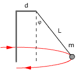

|
Se hace girar,
en un plano vertical, una piedra de 250 g unida a una cuerda de 1 m de
longitud. Determina:
a) Tensión de la cuerda en el punto más
bajo de la trayectoria cuando la velocidad es 7.3 m/s
b) Tensión de la cuerda al pasar por
la horizontal cuando la velocidad es de 5.8 m/s
c) Tensión de la cuerda en el punto
más alto de la trayectoria cuando la velocidad es de 4 m/s
d) La velocidad mínima que debería
tener la piedra para completar el giro sin problemas
|
En una pista de motocross hay un montículo
semiesférico de radio 60 m. Calcula la velocidad máxima
con que debería recorrerlo una moto para no salir despedida |
Un motorista recorre un rizo vertical de
radio 5 m (Masa del conjunto máquina-motorista: 110 kg)
a) ¿Cuál sería la menor
velocidad posible en el punto más alto para tomar el rizo sin problemas?
b) Si la velocidad fuera el doble, ¿cuánto
valdría la reacción normal del carril? |
|
El péndulo cónico
de la figura rota en un plano horizontal con velocidad ω
Determinar la tensión de la cuerda y el ángulo que
forma con la vertical |
|
|
El bloque de la figura está
unido a una barra vertical mediante dos cuer-das de igual longitud
que se tensan al girar el sistema alrededor de la barra.
Determina la velocidad de rotación necesaria, para que la
tensión de la cuerda superior sea 100 N. ¿Cuánto
valdrá la tensión de la otra cuerda? |
|
|
El péndulo de la
figura rota en un plano horizontal, sobre la superficie lisa de
un cono de ángulo φ, con velocidad ω.
a) Calcula la tensión de la cuerda
y la reacción normal de la superficie.
b) ¿Para qué velocidad
se despegará el péndulo de la superficie? |
|
Un vehículo entra en una curva de radio
R peraltada
con ángulo φ. Determina:
a)
Velocidad que debería llevar para tomar la curva sin problemas,
suponiendo lisa la superficie
b) Máxima
velocidad que podría llevar para tomar la curva sin problemas suponiendo
un coeficiente de rozamiento μ
c) Mínima
velocidad que podría llevar para tomar la curva sin problemas suponiendo
un coeficiente de rozamiento μ |
Una curva lisa de 180 m de radio tiene
un peralte calculado para que pueda tomarse a una velocidad máxima
de 45 km/h ¿Cuál debería ser el coeficiente de rozamiento
para que no derrapara tomándola a 90 km/h? |
 |
Determina la velocidad en
r.p.m con que debe girar el aparato de la figura para que la cuerda
forme 45º con la vertical. ¿Cuánto valdrá
entonces la tensión de la cuerda?
Datos: d = 0.5 m, L = 1 m, m = 2 kg |
|